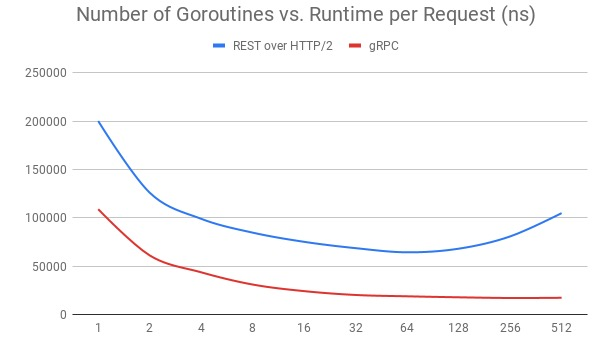

面向资源的接口设计
liyan
2021-05-05
应用协议/设计方法 概览
应用协议一览
- RPC
- 面向过程，基于 socket
- DICOM
- 面向影像数据，传输基于 socket
- RESTful
- 是面向资源的一种编程风格，基于 HTTP
- GraphQL
- 为 API 而生的查询语言，传输层无关
GraphQL 一瞥
- 2018年11月7日，Facebook 将 GraphQL 项目转移到新成立的 GraphQL 基金会（隶属于非营利性的 Linux 基金会）
- 既是一种用于 API 的查询语言也是一个满足你数据查询的运行时，可以与 RESTful API 共存
- 请求你所要的数据不多不少
- 为 API 中的数据提供了一套易于理解的完整描述，使得客户端能够精准获取所需数据，没有任何冗余
- 获取多个资源只用一个请求
- 这种查询语言所带来的灵活性和丰富性的同时也增加了复杂性，简单 APIs 有可能不适合这种方式
补足 REST 缺乏对资源进行“部分”和“批量”的处理能力
- 缺少对资源的“部分”操作的支持
- 避免 Overfetching：在 GET 方法的 Endpoint 上设计各种参数
- 缺少对资源的“批量”操作的支持
- 要解决批量操作这类问题，目前一种从理论上看还比较优秀的解决方案是 GraphQL
设计方法一览
面向过程 -> 面向对象 -> 面向方法 VS 面向资源
| 交互范围 | 数据 | 方法 | |
|---|---|---|---|
| 面向过程 | 进程内 | Record | Procedure |
| 面向对象 | 进程内 | Ojbect | Method |
| 远程方法调用 | 进程间 | Ojbect | Method |
| RESTful | 网络内 | 资源主体 | 统一接口 |
面向资源设计的通用部分
| RESTful | DICOM | |
|---|---|---|
| 资源 | HTTP Resouce | DICOM 数据集 |
| 展示 | Representation | SoP |
| 一个内容的 HTML/JSON/PDF 版本 | / | |
| / | 一套图的 Presentation/Print/GSPS | |
| State | 上下文 | / |
面向资源优于面向方法的地方
- 降低了服务接口的学习成本
- 资源天然具有集合与层次结构
- REST 绑定于 HTTP 协议
- HTTP 协议有效运作了 30年，与其相关的技术基础设施已是千锤百炼，无比成熟
Reference 1
RESTful 接口设计须知
REST 风格的系统特征
- RESTful 是一种设计风格
- Client-Server 分离结构
- Server-Side Rendering
- Stateless
- 上下文信息，会话信息由客户端保存维护，服务器端依据客户端传递的状态信息来进行业务处理
- Cacheability
- 运作良好的缓存机制可以减少客户端、服务器之间的交互，甚至有些场景中可以完全避免交互，从而提升服务性能
REST 风格的系统特征 2
- Layered System
- 客户端一般不需要知道是否直接连接到了最终的服务器
- 可以利用中间服务器进行缓存、伸缩和安全策略的部署
- Uniform Interface
- 软件系统设计的重点放在抽象系统该有哪些资源上，而不是抽象系统该有哪些行为（服务）上
- 面向资源编程的抽象程度通常更高
- HTTP Method as Interface
GET/HEAD/POST/PUT/DELETE/TRACE/OPTIONS
REST 的不足与争议
- 争议1：RESTful 只适合做 CRUD？
- 面向资源的编程思想太简单了，只有面向过程、面向对象编程才能处理复杂的业务逻辑？？
- 所有基于网络的操作逻辑，都可以通过解决“信息在服务端与客户端之间如何流动”这个问题来理解
- 最佳实践
- 比较抽象的场景，按 Google 推荐的 REST API 风格来拓展 HTTP 标准方法
- 用户登录/登出场景的设计: Sessions
REST 的不足与争议 2
- 争议2：REST 无法满足高性能要求？
- REST 与 HTTP 完全绑定，不适用于要求高性能传输的场景中？？
- REST 一般都是基于 HTTP/1.1，性能的确很差
- gRPC 比 REST 快是因为通讯在HTTP/2 上
- 最佳实践
- REST over HTTP/2
- 
REST 的不足与争议 3
- 争议3：REST 没有传输可靠性支持
- REST 并没有提供对传输可靠性的支持
- 当客户端没有收到有效返回时，重发请求是最佳策略
- HTTP 协议要求 GET、PUT 和 DELETE 操作应该具有幂等性（Idempotency）
Richardson 成熟度模型
- Richardson 成熟度模型（Richardson Maturity Model，RMM）
- 指导之前不使用 REST 的服务逐步导入 REST


RMM Level 0 完全不 REST
- 我们的需求是设计一个门诊预约系统：查看某大夫在指定日期是否有空闲，以便预约
- 医院开放了一个 /appointmentService 的 Web API，传入日期、医生姓名作为参数，就可以得到该时间段、该医生的空闲时间
- 得到空闲结果后，提交预约信息：预约成功或者失败

RMM Level 1 引入资源概念

RMM Level 2 引入统一接口

RMM Level 3 Hypermedia Controls

面向资源接口设计实践
面向资源的设计
- 面向过程设计接口的弊端
- 随着功能的变化，可能是形成一堆庞大而混乱的 API 接口。开发者必须单独学习每种方法。显然，这既耗时又容易出错
- 面向资源的接口设计
- 定义可以用少量方法控制的命名资源，方法自然映射为 HTTP 方法
- 基于 RPC 实现的服务，改变面向过程来设计接口的思考方式，复用 RESTful 设计风格，从而提高可用性并降低复杂性
- Google API 设计指南
标准方法
| 标准方法 | HTTP 映射 | HTTP 请求正文 | HTTP 响应正文 |
|---|---|---|---|
| List | GET |
无 | 资源 * 列表 |
| Get | GET |
资源 id | 资源 * |
| Create | POST |
资源 | 资源 * |
| Update | PUT or PATCH |
资源 | 资源 * |
| Delete | DELETE |
不适用 | google.protobuf.Empty** |
自定义方法
| 方法名称 | 自定义动词 | HTTP 动词 | 备注 |
|---|---|---|---|
| 取消 | :cancel | POST | 取消一个未完成的操作 |
| batchGet | :batchGet | GET | 批量获取多个资源 |
| 移动 | :move | POST | 将资源从一个父级移动到另一个父级 |
| 搜索 | :search | GET | List 的替代方法 |
| 恢复删除 | :undelete | POST | 恢复已删除资源 |
现状 RMM Level 1
/portal/authlogin/check/logout/portal/userchpass/portal/adminuser 的增删改查，查支持分页/portal/config设置与获取/portal/favorite收藏病例的增删该查(以 series iuid 为主键)/portal/feedback提交反馈意见
演进到 RMM Level 2

Users Management
| URI | GET | POST | PUT | DELETE |
|---|---|---|---|---|
/users |
Returns list of users. | Create a new user. | N/A |
N/A |
/users/{userId} |
Returns a specific user. | N/A |
Updates a user’s Info. | Delete an existing user. |
/users?username={username} |
Returns user info by name. | N/A |
N/A |
N/A |
Implements
app/view/users.pytests/test_users.pyapp/repo/user.pyapp/domain/user.py
Authentication with Session
| URI | GET | POST | PUT | DELETE |
|---|---|---|---|---|
/sessions |
N/A |
Login. | N/A |
N/A |
/sessions/{sessionId} |
Returns specific session Info. | N/A |
Updates session Info. | Logout. |